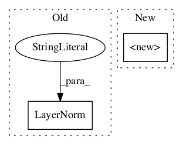

78a7f7de24c34235d0784a5781f46de34d2336eb,python/eight_mile/tf/layers.py,TransformerDecoderStack,__init__,#TransformerDecoderStack#Any#Any#Any#Any#Any#Any#Any#Any#,1133

Before Change
def __init__(self, d_model, num_heads, pdrop, scale=True, layers=1, activation="relu", d_ff=None, name=None, **kwargs):
super(TransformerDecoderStack, self).__init__()
self.decoders = []
self.ln = LayerNorm(name="ln_out")
for i in range(layers):
self.decoders.append(TransformerDecoder(d_model, num_heads, pdrop, scale, activation, d_ff, name))
def call(self, inputs, mask=None):
After Change
class TransformerDecoderStack(tf.keras.layers.Layer):
def __init__(self, d_model, num_heads, pdrop, scale=True, layers=1, activation="relu", d_ff=None, name=None, **kwargs):
super().__init__(name=name)
self.decoders = []
self.ln = tf.keras.layers.LayerNormalization(epsilon=1e-6)
for i in range(layers):
self.decoders.append(TransformerDecoder(num_heads, d_model, pdrop, scale, activation, d_ff))
In pattern: SUPERPATTERN
Frequency: 4
Non-data size: 2
Instances
Project Name: dpressel/mead-baseline
Commit Name: 78a7f7de24c34235d0784a5781f46de34d2336eb
Time:
Author: null
File Name: python/eight_mile/tf/layers.py
Class Name: TransformerDecoderStack
Method Name: __init__
Project Name: dpressel/mead-baseline
Commit Name: 78a7f7de24c34235d0784a5781f46de34d2336eb
Time:
Author: null
File Name: python/eight_mile/tf/layers.py
Class Name: TransformerEncoder
Method Name: __init__
Project Name: dpressel/mead-baseline
Commit Name: 78a7f7de24c34235d0784a5781f46de34d2336eb
Time:
Author: null
File Name: python/eight_mile/tf/layers.py
Class Name: TransformerEncoderStack
Method Name: __init__
Project Name: dpressel/mead-baseline
Commit Name: 78a7f7de24c34235d0784a5781f46de34d2336eb
Time:
Author: null
File Name: python/eight_mile/tf/layers.py
Class Name: TransformerDecoder
Method Name: __init__